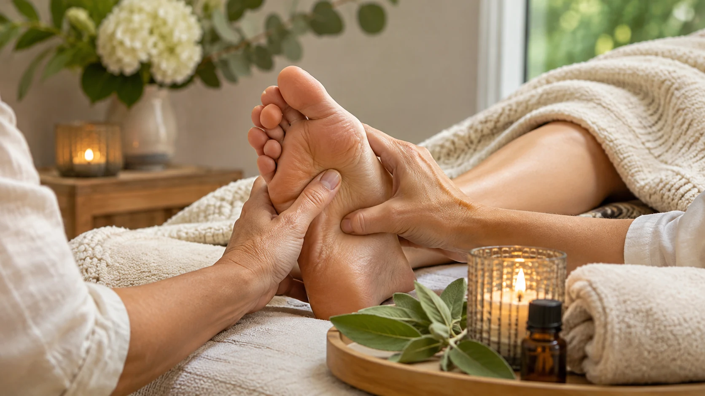

Reflexology
A relaxing treatment with a focus on the feet.
Ask about this →Reflexology and holistic therapies with Nicola Warran, an experienced practitioner offering treatments in a welcoming Bromley therapy room.

Illustrative concept photographyExplore Nicola's published treatment areas and find a starting point that feels right for you.
A relaxing treatment with a focus on the feet.
Ask about this →Supportive relaxation during pregnancy.
Ask about this →Gentle wellbeing support through life's transitions.
Ask about this →An opportunity to slow down and unwind.
Ask about this →A focused, relaxing holistic treatment.
Ask about this →Reflexology combined with the comfort of warm stones.
Ask about this →A blend of reflexology and carefully selected aromatherapy oils.
Ask about this →Additional holistic treatments available by enquiry.
Ask about this →Nicola has worked as a reflexologist in the Bromley and Beckenham area for more than 24 years. She specialises in maternity, fertility and menopause reflexology, as well as treatments focused on relaxation and wellbeing.
She is a Fellow of the Association of Reflexologists. Sessions take place in her own therapy room rather than through a mobile service.
Treatments are selected with your circumstances, preferences and suitability in mind.
Nicola's current website mentions gift vouchers for treatments. Ask directly about available options and how to purchase.
Enquire about a gift voucher ↗Voucher availability and terms to be confirmed by Nicola.
A few practical details from Nicola's published website.
Nicola welcomes clients to her therapy room in Bromley, close to the Beckenham area. This is not a mobile treatment service.
Yes. Maternity reflexology is one of Nicola's specialisms. Always discuss your circumstances with Nicola before booking.
Contact Nicola by email, or review the prices and booking terms on the original website.
No. The services described here are complementary wellbeing treatments and are not presented as substitutes for medical assessment or treatment.
Share the treatment you're interested in and the dates that may suit you. Nicola can confirm the next steps.
Email Nicola to enquire ↗Email: nicola.warran@outlook.com
Area: Bromley / Beckenham, South London
Original website: nwreflexology.co.uk ↗
Please contact Nicola for the exact session address and current availability.